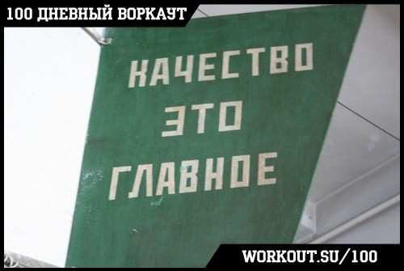
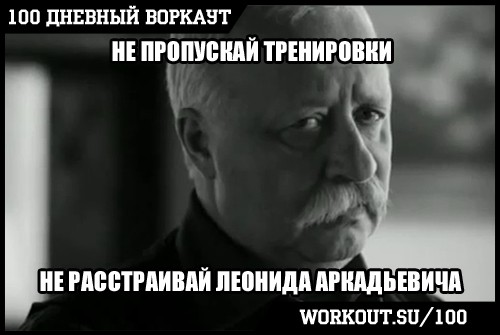

100 Дневный воркаут
<==== Вернуться к оглавлению
День 22. Качество и Регулярность
!!! СЕГОДНЯ ДОБАВЛЯЕМ ОДИН КРУГ !!!
Cегодня мы поговорим о двух основополагающих принципах без которых невозможно достичь успеха в воркауте. Эти два принципа - качество выполнения упражнений и регулярность тренировок. Рассмотрим каждый из них внимательнее ;)
Качество выполнения упражнений

Всегда фокусируйтесь на качестве исполнения, а не на количестве повторений! Как говорит американская поговорка
"Don't count the rep, make every rep count!"
, что примерно переводится как
"Не гонитесь за количеством повторений, а выжимайте максимум из каждого повторения!"
Во-первых, когда вы выполняете упражнение, то вы должны сфокусироваться только на процессе выполнения этого упражнения. Не нужно думать о том, сколько осталось повторений, не нужно думать о том, сколько осталось кругов. Тем более не нужно думать о том, чем вы займётесь после тренировки или какие дела ещё нужно сегодня сделать. Когда вы тренируетесь - вы тренируетесь! Относитесь к этому процессу, как к своего рода медитации и уделяйте ему должное внимание! Это не только повысит эффективность и снизит вероятность получения травм, но и принесёт вам душевный покой, потому что вы сможете использовать тренировки как способ на некоторое время уйти от проблем и забот современного мира и погрузиться в ваш собственный мир самосовершенствования, где вы каждый день становитесь лучше!
Во-вторых, было бы неплохо снимать на видео то, как вы выполняете упражнения, потому что чистый взгляд со стороны позволит вам более объективно оценить свою технику и допускаемые ошибки.
В-третьих, не нужно сильно расстраиваться, если по началу ваша техника неидеальна и есть огрехи (ну, например, при отжиманиях от пола у вас провисает таз). Если вы только начинаете свои тренировки, то подобные недочеты могут быть связаны просто напросто с тем, что ваши мышцы ещё не привыкли к этому упражнению! С другой стороны, если вы уже не новичок, то недостатки в технике могут быть обусловлены именно тем, что до этого вы в течение многих тренировок выполняли упражнение неправильно и привыкли его так выполнять.
О том, чем отличается простое выполнение повторений от осмысленных мы ещё поговорим в одном из будущих инфо-постов. Ну а сейчас переходим к второму важному принципу.
Регулярность тренировок

Не хочу никого расстраивать, но только благодаря регулярным тренировкам можно чего-то добиться. Чтобы наглядно проиллюстрировать эту идею, представьте, что ваш желаемый результат - это кирпичный дом. Вряд ли вам удастся в один день взять и с нуля построить дом целиком, а если вы попробуете, то скорее надорветесь, чем добьётесь успеха. Но если вы будете изо дня в день работать над строительством своего дома, кирпичик за кирпичиком, то со временем вы его построите! Ваши тренировки и есть те самые кирпичики, из которых вы строите желаемый результат, и поэтому, если вы не будете регулярно тренироваться, то и дом сам собой не построится, результата не будет!
Кроме того, многие нюансы техники выполнения упражнений вообще невозможно прочувствовать, если не выполнять упражнения регулярно! И наоборот, чем больше вы тренируетесь, тем лучше вы узнаете своё тело, понимаете как оно работает, можете постепенно исправлять огрехи в технике делая акцент на тех или иных моментах, научитесь чувствовать и включать в работу определенные группы мышц, которые раньше и не замечали. И рано или поздно (в зависимости от вашего усердия ;), вы добьётесь того результата, о котором сейчас мечтаете, именно благодаря тому, что постепенно, шаг за шагом, шли к этой цели, убирая препятствия на своём пути!
Пара слов вместо заключения
Бывают моменты, когда сложно сосредоточиться на выполнении упражнений, и это просто значит, что сейчас не лучший момент для тренировки. Бывают дни, когда совершенно нет времени тренироваться, но это значит лишь только, что очередной кирпичик вы положите завтра. В долгосрочной перспективе эти маленькие перерывы ничего не решают. Даже если в пустыни Сахара время от времени идёт дождь, то она всё равно остаётся пустыней, потому что всё остальное время там дождя нет! Поэтому, если вы регулярно тренируетесь и внимательно следите за качеством выполнения упражнений, то всё будет отлично и ваши цели будут достигнуты!
======> День 23. Отдых (активный и пассивный)